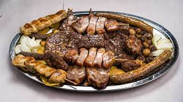

Balkan grill

Description:
For all the meat lovers. Barbecued meat in its best form! :D
Different meat specialties can be done. We prefer burger patties ("pljeskavica"),
cevapcici, stuffed chicken thighs and sausages! Also, you can bbq different veggies.
Personally, I prefer pure ground beef for meat specialties.
Ingredients:
- Ground beef, according to how many people will eat (half a kilo per a big guy,
300 grams per lady)
- At least 1 chicken thigh per person
- sausages
- Cheese (gouda is fine) to fill, cca 200 grams per 1 kilo of meat
- different veggies to taste (bell peppers, zucchini, eggplants)
- different spices to taste (sweet paprika, black pepper, salt)
- "Lepinjas", 2 per person (traditional bread similar to buns)
Steps:
- Mix the ground beef with spices and form the patties and/or cevapcici. You can
put in the finely chopped cheese.
- Open the chicken thighs and fill them up.
- You can also finely chop few slices of smoked bacon for extra taste.
- Slice the veggies if you want to barbecue them too.
- Set the fire up and wait until you have plenty of embers.
- BBQ the chicken first, then sausages and finally the burger patties.
That way you'll avoid burning the patties and cevapcici.
- Fry according to your taste of redness.
- In the end, bake the veggies too.
- In the end, quickly bbq lepinjas soaked in meat juice and fat.
- Enjoy!